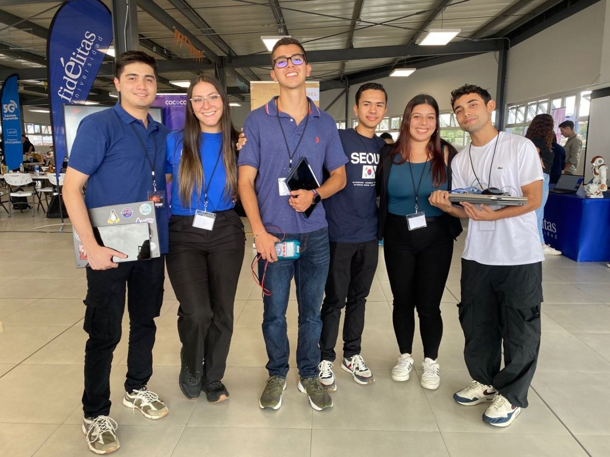
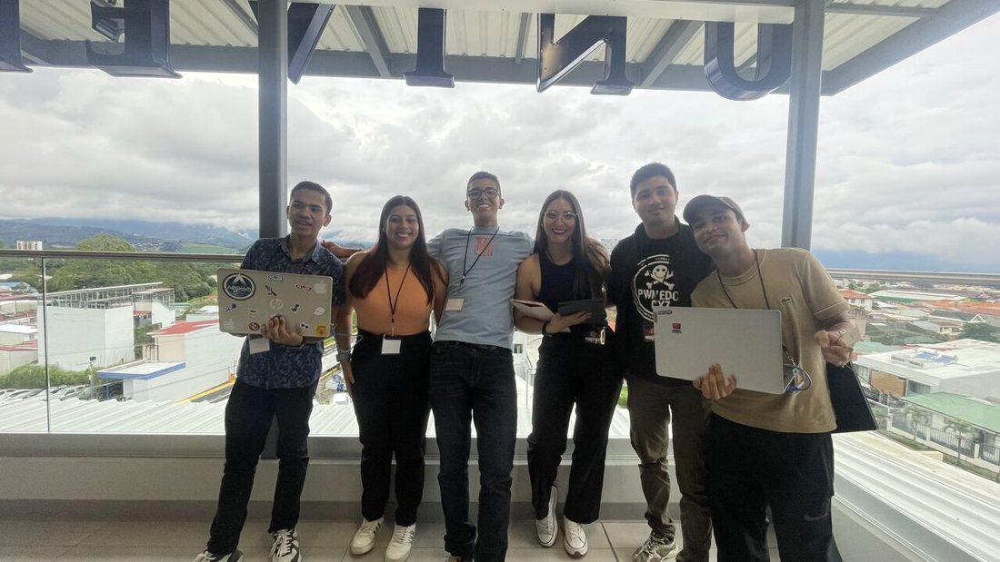
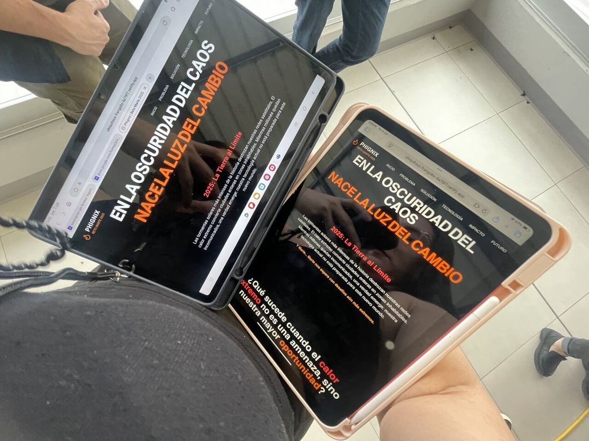

Reto Marte 2025 · Universidad FidélitasReto Marte 2025 · Universidad Fidélitas
Equipo Phignix: energía para el planeta rojoTeam Phignix: energy for the red planet
2.ºLUGAR · FINALISTASPLACE · FINALISTS
- RetoChallenge
- Proponer soluciones viables para la gestión energética en Marte, en un equipo multidisciplinario de sistemas, mecatrónica y electrónica.Propose viable solutions for energy management on Mars, in a multidisciplinary team of systems, mechatronics and electronics students.
- Lo que creamosWhat we built
- Una simulación inmersiva de Marte en realidad virtual, prototipos con Arduino, placas Peltier y sistemas de telecomunicaciones, y un sitio web para presentar el proyecto.An immersive Mars simulation in virtual reality, prototypes with Arduino, Peltier modules and telecommunication systems, and a website to present the project.
- ResultadoResult
- 7.º lugar en mi primera participación; en la segunda llegamos a la final y obtuvimos el 2.º lugar.7th place in my first participation; in the second we reached the final and placed 2nd.
- AprendizajeTakeaway
- Design Thinking aplicado, trabajo en equipo y volver más fuerte. Nuestro lema: «De las cenizas a las estrellas».Applied Design Thinking, teamwork and coming back stronger. Our motto: “From the ashes to the stars.”
Realidad virtualVirtual realityArduinoPlacas PeltierPeltier modulesTelecomunicacionesTelecomSitio webWebsiteDesign ThinkingTrabajo en equipoTeamwork
Explorar la simulación de Marte en VRExplore the Mars VR simulation


